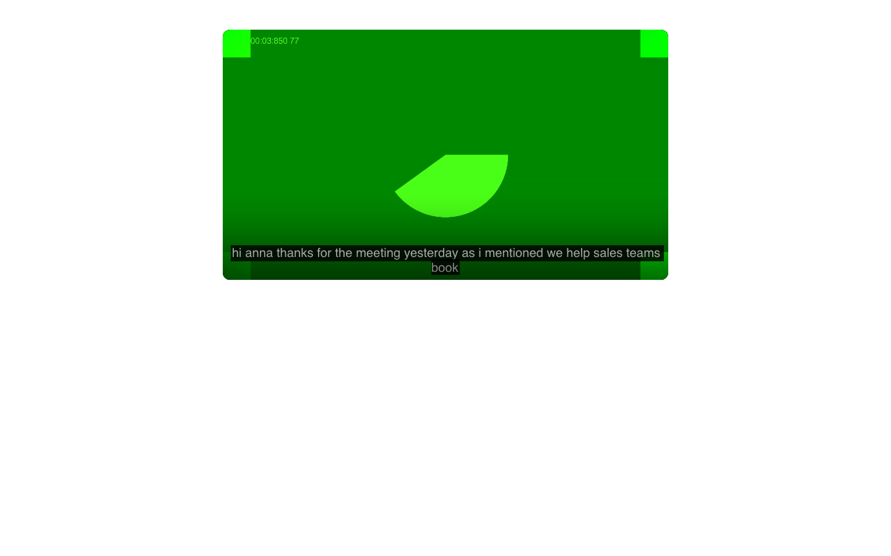
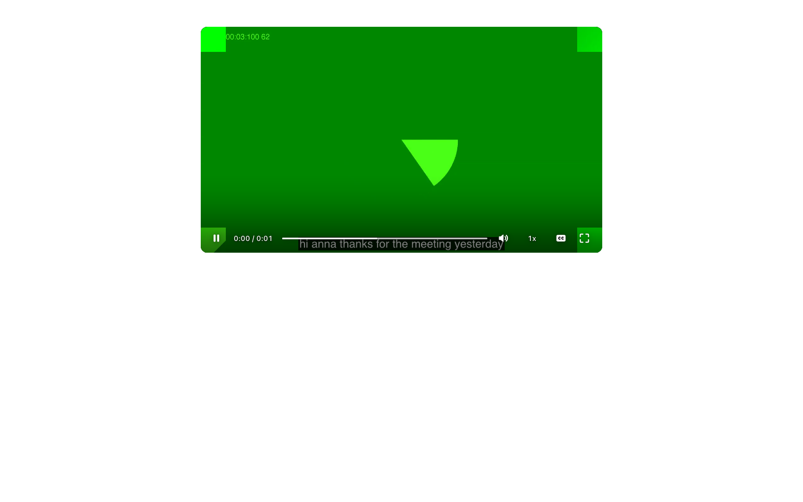
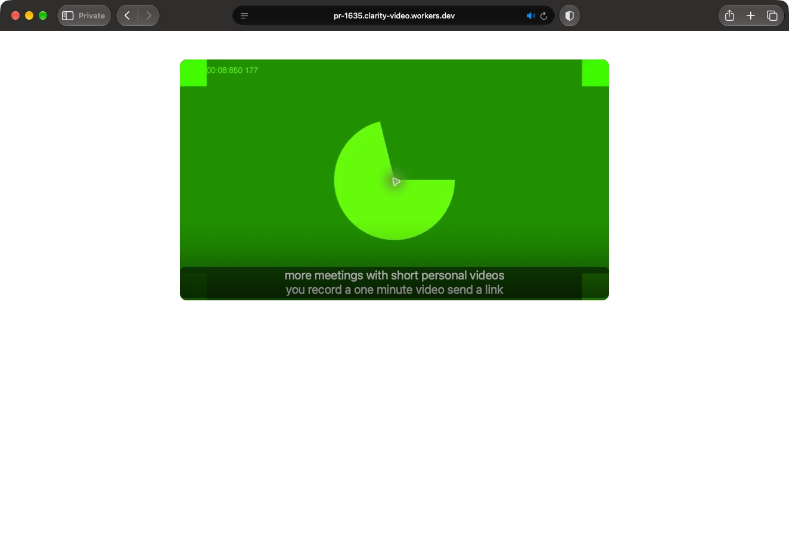
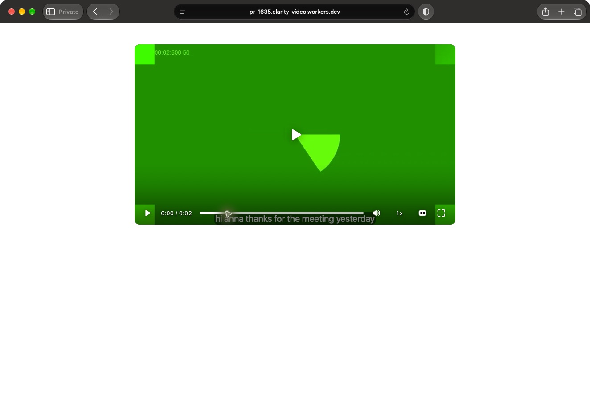
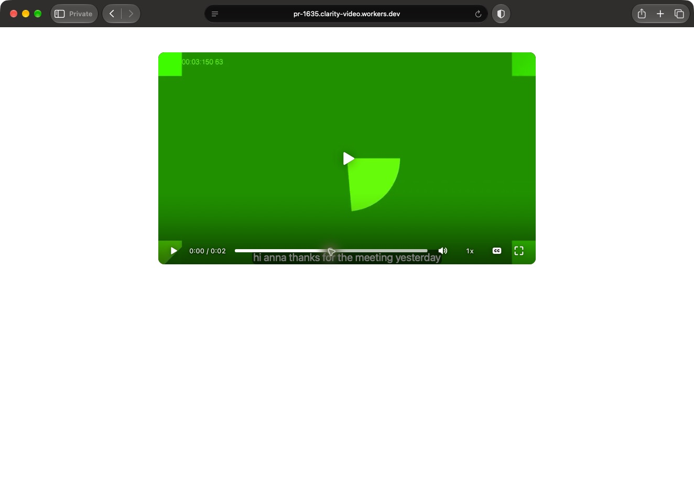
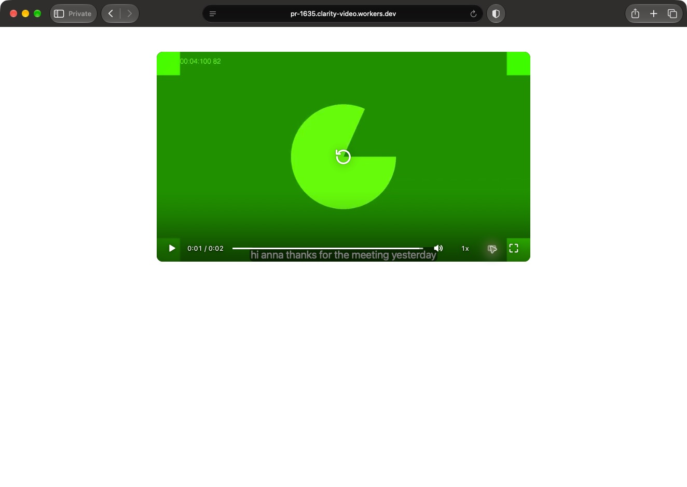

PASS+NOTES. Real speech and real Safari playback verified. Safari timing is visual only.
Head 88bec15f4efc8d40ffdbf3bbb9ba7f655c228e3f
Earlier Proof and all earlier images
Original audio decoded from the played HLS stream.
Promoted 2 to 4 second clip audio.






Verdict: PASS+NOTES Head 88bec15f4efc8d40ffdbf3bbb9ba7f655c228e3f. William approved this verification on 2026-11-02. This addendum closes the real-speech recording and real-Safari playback gaps using the requested screenshot fallback for Safari. Earlier passing checks were retained, not rerun. Safari's precise speech offset and underlying text-track count could not be measured through its UI. No caption offset over 0.5 seconds or second visible caption choice was observed. The preview deploy-info and authenticated doctor matched this head. A fresh detached worktree used Node 22.23.1 and the frozen pnpm lockfile. The temporary Playwright script copied record-take.mjs's fake-camera and WebAudio microphone setup, injected en-rep-note.ogg, clicked Start and Stop, and kept the recorder open until videos_get became ready. D1 independently confirmed delivery=ready. The seal contains two contiguous word chunks, samples 0 to 288514 and 288514 to 344514, with seal_chunks=2, seal_end=344514 and seal_captured=376322. No speech rows were seeded. The recording's automatic trim was reset before original playback. The signed-out mock page was https://pr-1635.clarity-video.workers.dev/page/nrkuej. Chromium's own CC control enabled exactly one English subtitle track. The active cue was read against the media currentTime during playback at five moments. | Media time, seconds | Spoken word from live microphone timings | Active cue | | --- | --- | --- | | 2.320 | hi, 2.160 to 2.480 | hi anna thanks for the meeting yesterday as i mentioned we help sales teams book | | 3.716 | meeting, 3.600 to 3.920 | hi anna thanks for the meeting yesterday as i mentioned we help sales teams book | | 7.517 | meetings, 7.440 to 7.760 | more meetings with short personal videos you record a one minute video send a link | | 12.818 | customer, 12.777 to 13.417 | to your customer and see right away when they watch it our customers book about | | 19.418 | tomorrow, 19.232 to 19.712 | twice as many meetings i will send a proposal tomorrow and follow-up on thursday | These are sentence cues, not word highlighting. Each sampled spoken word was in the active cue. Cue starts at 2.160, 7.200, 12.377 and 16.617 match their first live-word timestamps, a 0.000-second conversion offset. Those microphone timestamps are the speech reference requested in the brief, not an independent human alignment of every word. An independent audio check compared decoded HLS audio with the actual microphone fixture. I calculated normalized cross-correlation of 10 ms RMS windows across fixture regions 2 to 4, 3.5 to 5.5, 7 to 9, 12 to 14 and 18 to 21 seconds. Playback was 0.09 seconds later than the fixture in all five regions, with correlations 0.991 to 0.996. This is the fixture-to-recording shift, not a 0.09-second caption error. The first audible onset, using RMS greater than 316 on signed 16-bit PCM, was at playback 2.110 seconds. The first cue starts at 2.160, about 0.05 seconds late. This threshold-based onset estimate has 0.01-second resolution and is not a phonetic forced alignment. Saving set_trim from 2 to 4 seconds returned accepted=true. I waited until clipPending=false and clip playback ID O8DEfHXOHZ700vBW01kAt5a4P7YuSJC7VFP8levuwfPZY appeared. At clip currentTime 0.309, 0.908 and 1.709, the sole English track was showing "hi anna thanks for the meeting yesterday", with cue bounds 0.160 to 2.000. The respective microphone words are hi, anna and meeting after subtracting 2 seconds. Audio cross-correlation against the original measured rebase errors of 0.00, 0.01 and 0.00 seconds over clip regions 0.1 to 0.6, 0.6 to 1.2 and 1.2 to 1.9. First audible clip speech starts at 0.100 seconds, making the first cue about 0.06 seconds late. Both Chromium screenshots show captions. Real Safari was tried in the requested order. safaridriver -p 4444 started, but the session returned "Could not create a session: You must enable 'Allow remote automation' in the Developer section of Safari Settings to control Safari via WebDriver." No sudo or settings changes were used. The gpt-6-astra computer-use fallback worked in a Safari Private window. It played the original and promoted clip, toggled captions through the player's own CC control, and captured the same live-word text. Both had one visible CC control, no language chooser and no duplicate caption line. The clip has early, middle and near-end screenshots. No visible timing disagreement appeared between Safari playback and the track at those sampled frames. Safari's exposed native UI had no JavaScript interface, no Develop menu, and Command-Option-I produced no change. The tools also had no audio feed. Thus the Safari result is visual playback and caption evidence, not a measured native-HLS clock comparison or an inventory of hidden text tracks. No Playwright WebKit run was used. The original screenshot's second cue reads "video send a link", matching the live words; an initial helper transcription of that screenshot was corrected by inspection. All preview writes from this run were confined to PR 1635 mock data. - Password login/session activity for the mock Pro account. - One uploads_start and uploads_finish recording lifecycle, its library/video rows, upload completion and Mux webhook/job updates, two take_speech_chunks, the take_speech seal, automatic title and automatic trim. - The recorder's automatic share page b4135189-2892-4c18-a1a0-57388ee4b73f at /page/bp52ra, with its normal draft, publication and route rows. - One reset_trim, one explicit set_trim from 2 to 4, and their normal edit, clip-job and promotion history. - One pages_create for page 5b69bb5b-095c-4e86-bfb4-176859c49b8d and one pages_publish at /page/nrkuej, with normal page, draft, publication and route rows. An earlier pages_create using the node ID returned 404 and created no page. - Ordinary preview page/video analytics and RUM from Chromium and Safari visits. No synthetic analytics were inserted. - Cleanup called pages_delete for both pages and library_delete for the take. Readback returned 404 for both pages, both public URLs and videos_get. D1 returned no speech seal or chunk rows and recorded discarded_at=2026-11-02T16:41:19.544Z on the video tombstone. Normal lifecycle, job, deletion and analytics history remains. All direct SQL was SELECT-only against the resolved and checked clarity-pr-1635-auth database. No staging or production writes, Clarity branch changes, Clarity pushes or merges occurred. The temporary browser/query scripts were deleted and the worktree was removed with git worktree remove --force. The artifact publisher updates only the requested public evidence repository. GitHub writes are this PR Proof edit and the two requested comments. Network failures were retried with the supplied retry.sh 6 15 command. One preview IPv4 address repeatedly failed while 172.67.143.69 responded; the recording browser pinned that responding address for this run only. No machine DNS setting changed. Proof names the head passes. Evidence, mock audio and all earlier images are retained at https://willayam.github.io/clarity-design-previews/proof-1635/ .